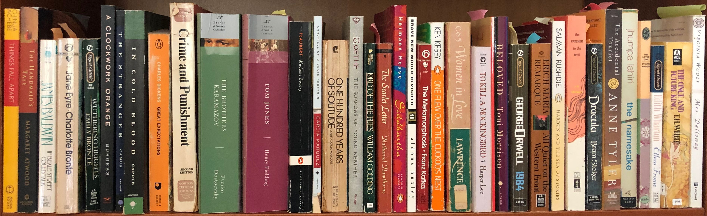

News & Events
AHEM’s Assabet River Coop
Posted: August 15, 2019
If you are:
- a homeschooling parent 18 years old or older,
- a Friend of AHEM,
- homeschooling at least one child born in 2013 or earlier, and
- living in one of the following towns:
- Acton
- Bedford
- Boxborough
- Carlisle
- Concord
- Lincoln
- Littleton
- Maynard
- Stow
- Sudbury
- Westford
you are invited to join a coop designed to help independent homeschoolers get to know each other, share interests and skills, and plan social events, group activities, and field trips together!
The fall session will run from September 12 – November 21, 2019.
The cost is $50/family for the 11 week session.
To join:
- you must agree to the Coop guidelines, which will be sent to you after you indicate interest and
- you must commit to attending weekly park days, and to organizing an event or activity for the group, and commit to attending at least one such event.
Communication is via a program written for the purpose of facilitating this network. Members have profiles where they can list interests and skills they would be willing to share with others in the group. Members post events that they plan to the group calendar.
If you would like to receive the Handbook and info on how to register, email info@ahem.info. Include your full street address.
Space in the coop is limited. No refunds.
What Does Your Approval
Letter Look Like?
Here are some examples of actual letters received by homeschoolers from their school district after submitting an education plan: Read more.
Student Charlie Cards 2019/20
August 1, 2019
The MBTA issues student fare media to middle school and high school aged homeschoolers for use on the MBTA system. In August, they will be issuing student Charlie Cards for the 2019-2020 Academic School Year. Read more.
Getting Started Homeschooling
Posted: July 25, 2019
Thursday, September 19, 2019, 7:30 - 9:00 pm in Littleton, MA
Whether you are actively considering home education or are just curious about how it is done, you are invited to attend Getting Started Homeschooling. The free program will be held in the Couper Room of the Reuben Hoar Library, 41 Shattuck Street, Littleton, MA on Thursday, September 19, 7:30 – 9:00 pm.
Topics to be covered include an overview of homeschooling, getting started, methods, resources, and homeschooling support. Informational handouts will be available and there will be time for questions and discussion.
The program will be presented by Sophia Sayigh. Sophia is a co-founder of Advocates for Home Education in Massachusetts, Inc., a non-profit 501(c)(3) charitable educational organization that gathers and disseminates information about homeschooling in Massachusetts through education, advocacy, and events. She is also the author of a fictional book featuring homeschoolers, Unschoolers.
Admission is free, but preregistration is required. Preregister here.
Space is limited and spots are allotted on a first come, first served basis.
Please respect AHEM’s mission to empower individuals through education by not soliciting for your business at this event.
AHEM’s Policy and Practice Data Analysis - July 2019
Posted: July 11, 2019
For over fifteen years, AHEM has been collecting information from homeschoolers about official town policy (including the policies themselves), and about how interfacing with school officials works in practice in towns in Massachusetts, according to homeschoolers. Read more.
Back by popular demand: Sample Progress Report
Posted: June 27, 2019
You asked, we listened. Here's a sample progress report that has been accepted in Massachusetts. Read more.
Evaluating Evaluation: Progress Reports
Posted: June 13, 2019
In Massachusetts, homeschooling parents, as the teachers of their children, are responsible for evaluating their progress. CARE AND PROTECTION OF CHARLES & others, 399 Mass. 324 (1987) clearly outlines three forms of evaluation: “Other means of evaluating the progress of the children may be substituted for the formal testing process, such as periodic progress reports or dated work samples, subject to the approval of the parents.” (Charles at 340) Parents may choose one of them to fulfill their responsibility. Read more.
Student "M7" Charlie Cards for Homeschoolers
Posted: June 6, 2019
Summer Monthly Paper Passes M7, good for July and/or August only, can be ordered using this form. The deadline for requesting summer passes is July 1, 2019. Read more.
Announcing AHEM Networking Forum
Posted: May 23, 2019
AHEM listened and heard the challenges independent family-based homeschooling families face these days. Elists have fizzled, Facebook is an unreliable source for finding out about events, many groups seem splintered or private. Where do you fit in? Is it worth going to the park if you’re not sure anyone else will show up? How can you meet other homeschoolers who live nearby? You are not alone. Read more.
Outreach!
Posted: May 2, 2019
Remember when you were considering homeschooling but you weren’t sure where to find information about it? AHEM’s Considering Homeschooling brochure cuts to the chase with information on deciding to homeschool and getting started homeschooling in Massachusetts. Read more.
POPCORN AND PAGE TURNERS: RUNNING A TEEN BOOK GROUP
Posted: April 11, 2019
When my son, Fred, was 13, we decided to start a book group to read adult literature. I had never led a book group before—just had read a lot as a fiction lover—but was excited to give it a try. Read more.
Are Homeschoolers Entitled to Participate in Public School Classes and Activities?
Posted April 11, 2019
At some point in their homeschooling experience, for varied and personal reasons, families may seek out classes, extracurricular activities, or athletic programs offered by their local school district. One might assume that a homeschooling family paying property taxes in their town would be entitled to gain full access to public school offerings, but it’s not quite that simple. Read more.
Bespoke Homeschooling Without Breaking the Bank
Posted February 21, 2019
You’ve made the leap, cut the cord, taken the plunge—however you put it—you’ve pulled your kid out of school, or made the decision not to send them at all. Often this decision means the family budget also takes a hit, as one or both parents adjust their schedules and/or work hours to spend more time with the children. It could even mean one parent leaving the workforce for a time. Read more.
Legislative Update
Posted February 7, 2019
The Massachusetts Legislature began its 191st session on January 2, 2019. The various bills that AHEM tracked in the 190th session, regarding changes to the compulsory attendance age and other educational issues, have either died or been set aside for further study in the new session. Read more.
Unschooling as a Feminist Act
Posted January 3, 2019
When I was a young mother, I wore a t-shirt with the words: “The hand that rocks the cradle rocks the boat.” The phrase put a spin on a 19th century poem entitled “The Hand That Rocks the Cradle Rules the World” by American poet William Ross Wallace. I understood at the time that becoming a mother was increasing my desire to create change in the world, although I didn’t know where that would lead me. I had already realized that, as the feminist movement espoused, the personal is political. I had already challenged a few assumptions about how life was supposed to work—including rejecting both the style in which I’d been parenting and the institution of school as an effective vehicle for education. Read more.